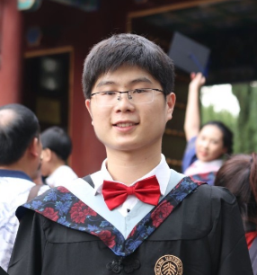

|  | PhD. Candidate, |
I am a forth-year PhD. candidate at Peking University under the supervision of Dr. Guangyu Sun (2019-2024 expected).
Before that, I received the B.S. degree from Peking University. My research interests primarily lie in the areas of computer architecture, near-data processing, domain-specific accelerators, deep learning systems, and heterogeneous computing. I pay particular attention to addressing the Memory Wall problem, which is especially challenging for emerging memory-intensive workloads. Through my work, I have published as the first author in top-tier computer architecture/system conferences/journals including HPCA (Won the Best Paper Award), USENIX ATC, DAC, PACT and TCAD.
Domain-Specific Architecture
Heterogeneous Computing
Near-Data Processing
Machine Learning System
DIMM-Link: Enabling Efficient Inter-DIMM Communication for Near-Memory Processing.
Zhe Zhou, Cong Li, Fan Yang, Guangyu Sun.
International Symposium on High- Performance Computer Architecture (HPCA), 2023. (Best Paper Award!)
PetS: A Unified Framework for Parameter-Efficient Transformers Serving.
Zhe Zhou, Xuechao Wei, Jiejing Zhang, Guangyu Sun.
USENIX Annual Technical Conference (USENIX ATC), 2022. Acceptance rate: 16%.
GNNear: Accelerating Full-Batch Training of Graph Neural Networks with Near-Memory Processing.
Zhe Zhou, Cong Li, XueChao Wei, Guangyu Sun.
International Conference on Parallel Architectures and Compilation Techniques (PACT), 2022.
Energon: Towards Efficient Acceleration of Transformers Using Dynamic Sparse Attention
Zhe Zhou, Junlin Liu, Guangyu Sun, and Zhenyu Gu.
IEEE Transactions on Computer Aided Design of Integrated Circuits & Systems (TCAD), 2022.
BlockGNN: Towards Efficient GNN Acceleration Using Block-Circulant Weight Matrices
Zhe Zhou, Bizhao Shi, Zhe Zhang, Guangyu Sun, and Guojie Luo.
Design Automation Conference , (DAC), 2021. Acceptance rate: 23%
NMExplorer: An Efficient Exploration Framework for DIMM-based Near-Memory Tensor Reduction. (To Appear~)
Cong Li, Zhe Zhou, Xingchen Li, Dimin Niu, Guangyu Sun.
Design Automation Conference (DAC), 2023.
FD-CNN: A Frequency-Domain FPGA Acceleration Scheme for CNN-based Image Processing Applications.
Xiaoyang wang (1), Zhe Zhou (1), Zhihang Yuan et al.
ACM Transactions on Embedded Computing Systems (TECS), 2022.
Hardware-Assistedservice Live Migration in Resource-Limited Edge Computing Systems.
Zhe Zhou, Xintong Li, Xiaoyang Wang, Zheng Liang, Guangyu Sun, and Guojie Luo.
Design Automation Conference , (DAC), 2020. Acceptance rate: 22%.
Saface: Towards Scenario-Aware Face Recognition via Edge Computing System.
Zhe Zhou(1), Bingzhe (1) Wu, Zheng Liang, Guangyu Sun, Chenren Xun, and Guojie Luo.
HotEdge, 2020.
Edge-Stream: A Stream Processingapproach for Distributed Applications on A Hierarchical Edge-Computing System
Xiaoyang Wang, Zhe Zhou, Guangyu Sun, Jidong Zhai, and Peng Han.
IEEE/ACM Symposium on Edge Computing (SEC), 2020.
Rapid Configuration of Asynchronous Recurrent Neural Networks for ASIC Implementations
Spencer Nelson, Wassim Khalil, SangYun Kim, Jia Di, Zhe Zhou, Zhihang Yuan, Guangyu Sun
IEEE High Performance Extreme Computing Conference (HPEC), 2021.
Reconfigurable ASIC Implementation of Asynchronous Recurrent Neural Networks
Spencer Nelson, Sang Yun Kim, Jia Di, Zhe Zhou, Zhihang Yuan, Guangyu Sun
IEEE International Symposium on Asynchronous Circuits and Systems (ASYNC), 2021.
2023: HPCA Best Paper Award / HPCA 最佳论文奖 (2 positions)
2023: President Award of Peking University / 北京大学校长奖学金 (top 2%)
2023: Award of Excellence, Stars of Tomorrow Intership Program / 微软亚研院“明日之星”优秀实习生奖 (top 10%)
2022: ByteDance Scholarship / 字节跳动奖学金 (10 students in China)
2022: China National Scholarship / 博士生国家奖学金 (top 2%)
2022: Academic Innovation Award of Peking University / 北京大学科研创新奖 (top 1%)
2021: Merit Student of Peking University / 北京大学三好学生
2016: Excellent Social Work Award of Peking University / 北京大学社会工作奖
Huawei Cloud (AI System Lab)
Research Intern. July 2023-
Microsoft Research Asia (Networking Research Group)
Research Intern. Aug 2022- May 2023
Alibaba DAMO Academy (Machine Intelligence Laboratory)
Research Intern. May 2021-Jan 2022
Alibaba DAMO Academy (T-HEAD Semiconductor)
Research Intern. July 2020-January 2021
Advanced Institute of Information Technology (Real-Time Computing Laboratory)
Research Intern. April 2019-April 2020